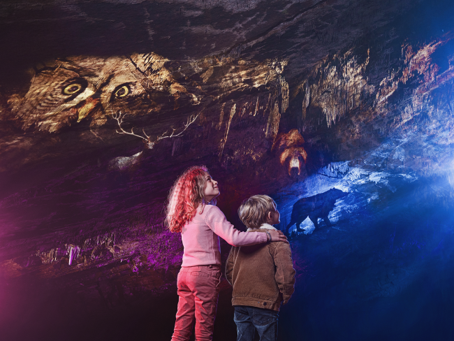
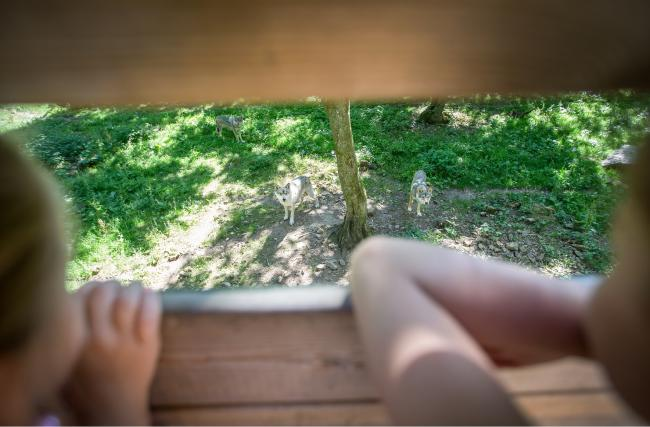
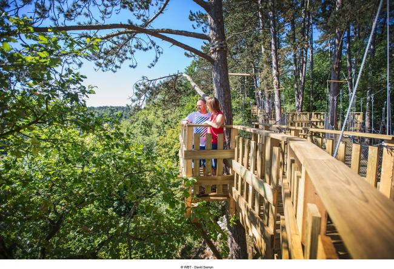

Onder de grond
De grot
Zalen vol druipsteen, uitgesleten door de Lesse, die twee kilometer verderop weer tevoorschijn komt. Sinds 2018 uitgelicht met een nieuw lichtsysteem.
Een half miljoen jaar geleden verliet de Lesse haar bedding en sleet een doolhof van galerijen uit in het kalksteenmassief van Boine. Vandaag is dat een van de pronkstukken van de Ardennen — met een dierenpark erbovenop.
Het domein

Zalen vol druipsteen, uitgesleten door de Lesse, die twee kilometer verderop weer tevoorschijn komt. Sinds 2018 uitgelicht met een nieuw lichtsysteem.

Ruim 250 hectare in de oude Lessevallei, met beren, wolven, lynxen, bizons en wilde zwijnen in een omgeving die nauwelijks verstoord wordt.

Zeshonderd meter kruipen, waden en klauteren door donkere gangen — met laarzen, overall en helmlamp.
Het domein ligt in het Famenne-Ardenne Geopark, door UNESCO erkend om zijn geologisch erfgoed.
Blijven slapen
Op een steenworp van de grot slaap je in Cocoon Village in een klaargezette tent met ontbijt van streekproducten — of in een van de acht Tree Tents, hangend in de bomen van het dierenpark.

Praktisch
De grot zelf, het dierenpark van ruim 250 hectare en het Speleo Parcours voor wie de gangen actief wil beleven. Reken op een volle dag als je grot en park combineert.
Ja — wie het park te voet verkent, ziet de Europese fauna van dichtbij in een goed bewaard landschap. Er rijdt ook vervoer door het park.
Han is een stadje aan de Lesse, een zijrivier van de Maas, in het hart van de Belgische Ardennen — op korte afstand van Rochefort en Dinant.
Openingstijden en tickets vind je bij het domein zelf; de redactie vult de actuele praktische informatie aan.